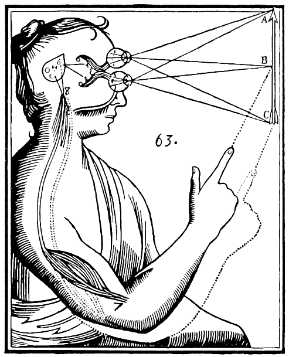
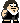
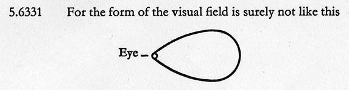

Cartesian Creatures
Here is the "genetic" code of a simple cartesian creature:
function getColor(x, y, now, context) {
var red = x;
var green = y;
var blue = (now / 5) % 256;
return [red, green, blue];
}
Creatures
Hint: make the window smaller to improve performance. Or you can go full screen and zoom-in (CTRL-+). It will also make animation smoother and sometimes more interesting. Hit ESC to go back.
Add your own creature!
In this universe you are the replicator driving memetic evolution of this specie.
- Fork this project on GitHub
- Add your "genes" in the
/creaturesfolder - you can start with copying the_template.jsfile under your creature name. - Add yor creature to the
/creatures/_list.js - Create pull request
Anatomy
Let's dissect the original creature:
function getColor(x, y, now, context) {
var red = x;
var green = y;
var blue = (now / 5) % 256;
return [red, green, blue];
}
The getColor is a JavaScript
function. On the input it is supplied with coordinates of a pixel on your screen and current
moment in time expressed as a number. It should return the color.
The color is based on the RGB model.
The % stands for modulo
operation.
It represents a reminder after dividing a number by 256. It will guarantee that computed value
is always within 0-255 range, because 255 is the maximum value we can assign to either red,
green,
or blue. The value [0, 0, 0] stands for black while [255, 255, 255]
stands for white. The value [255, 0, 0] stands for "pure redness".
The now has to be divided by 5, otherwise animation would be too fast.
You should adjust this factor according to your perceptual needs.
Achieving more complex visual effects might require additional information over
x, y and now. For example your creatures might feed
on some values computed before each animation frame. This information can be put in the
context. All you need is to define setUpContext and
updateContext functions in your creature's code.
// called when animation is loaded
function setUpContext(context) {
// ... do your things, e.g.:
context.frameNumber = 0;
return context;
}
// called before each animation frame
function updateContext(context) {
// ... do your things, e.g.:
context.frameNumber++;
return context;
}
The context is just a dictionary you can extend. It comes with some values by default:
imageData- what's on the screen nowwidth- canvas widthheight- canvas height
The Genealogy
I remember the joy evoked by lectures of my beloved professor Ewa Kochan. Her dark clothes were always covered with pieces of cat's fur and she was always wearing some interesting brooch, depicting an animal or an insects. That day she was telling us about Rene Descartes, while walking constantly back and forth between the blackboard and the door, reminding us about the importance of peripateic tradition in our own kind. In this symbiosis of movement and speech she was slowly getting more articulated and somehow excited, completely submerged in contemplation of memes which came out of another mind from the past. But it suddenly stopped. She stopped, both speaking and moving. After a moment she said:
I just became so cartesian, do I even like Descartes? Let me think.
The professor resumed her trajectory, but she was silent, for several seconds. And we all froze while starring at her in this unbelievably dramatic suspense. Eventually she spoke:
My dear, moderately, moderately indeed!
The digression was over, the dramatic tension was released. Like if the order of eternal recurrence was restored in this power of movement involving body and mind. The movement producing divinity. The only believable one because these gods can dance.

Descartes was born too early to know about genetics and evolution. He might have suspected something after dissecting so many specimens. He new math though, quite well. Till today our notebooks and computer screens are infected by his memes of the coordinate system. He also threw us into the abyss of narcissistic interest in own consciousness.
He speculated so much about our "mental substance", although denied consciousness of non-human animals. His studies in anatomy and behaviour led him to the conclusion that other creatures are just mere machines - examples of a very complex God's clockwork. And our cartesian creatures are not much different. Not conscious, simple, living in a very limited environment. But still I develop some kind of personal relation with each of them. On the spectrum between chaotic randomness and complex simulations of artificial life, there is always this homeostasis emerging out of math functions stabilizing visuals over entropy. And the tension between these two forces described by Pirsig's Metaphysics of Quality - static and dynamic, to stabilize and to mutate, to preserve and to revolutionize. They seem to be immanent to any system emerging over continuous replication.
Descartes made us believe that retrospection is enough to know anything, as the only representation of the world exists in our minds. The subjectivity of this phenomena leads to extreme forms of solipsism. Which reminds me of another project I was working on recently. The kochiyama bot represents automated phenomenological model of a mind acting out of fetishized lust.
The math was there, but not the code. It took two centuries until Ada Lovelace expressed the code for the first time. She described the algorithm for Babbage's Analytical Engine, which was never fully constructed though. It makes this achievement even greater. In case of our cartesian creatures we can see straight away how their "genetic" code influences their colorful phenotype. It was the purpose of this project. In contrast Lovelace's work was purely conceptual. I cannot even imagine all the levels of abstraction she ascended through. If going meta had own universe, it is how the Harmony of the Spheres would sound like there - the music of ultimate beauty.
[The Analytical Engine] might act upon other things besides number, were objects found whose mutual fundamental relations could be expressed by those of the abstract science of operations, and which should be also susceptible of adaptations to the action of the operating notation and mechanism of the engine ... Supposing, for instance, that the fundamental relations of pitched sounds in the science of harmony and of musical composition were susceptible of such expression and adaptations, the engine might compose elaborate and scientific pieces of music of any degree of complexity or extent.
[...] engine is the material expression of any indefinite function of any degree of generality and complexity.
Ada Lovelace anticipated what will happen once we have machines capable of running the code. But we had to wait almost a century until any machine could run any algorithm. Meanwhile we turned into our minds, simulating there abstractions which physical world was not able to represent in any way. Until finally we broke free from the cartesian solipsistic cave.
During all the period of cartesian mentalist paradigm, which destroyed the concept of objectivity forever, there was still something intersubjective. Everything that's communicable - the language. We had to wait till the beginning of the 20th century, for so called new linguistic paradigm. When the idea was born, that if language, the code, represents reality in any sense, than studying the language is enough to know what can be known. Here is what Ludwig Wittgenstein wrote on solipsism:
5.62 This remark provides a key to the question, to what extent solipsism is a truth. In fact what solipsism means, is quite correct, only it cannot be said, but it shows itself. That the world is my world, shows itself in the fact that the limits of the language (the language which I understand) mean the limits of my world.
He wrote it in the trenches of the World War I.
I was quite surprised to discover that Alan Turing was Wittgenstein's student at Cambridge. It is said that they didn't like each other. I was even more surprised to discover that Turing, at the end of his life, turned from cryptography into math of biology and physiology. Like if he was trying to crack another code.
This was the beginning of the code we are using today. But it was also the end of our specie. The 3rd replicator was born.

Why?
This project is completely postmodern, in this sense, that I didn't really create it. It wrote itself in a similar way Umberto Eco's books were writing themselves. He was just picking some idea, and then wild horses were riding through the vast context of his knowledge, still constrained by the structure of memetic evolution which happened before. What is left to do for us is not to create but to quote, ad mortem defaecatam. Once the first steps of my very simple vision were embodied, they spawned all the rest.
Initially I just wanted to make coding such visuals as easy as possible, without any programming environment, directly in the browser. But soon I also realized that I want to pay a tribute to primitive pixel graphics of 8-bit computers, especially Commodore 64, which was my first machine. Not only mine, for the whole generation it was like an entry into another dimension, letting us start programming straight away from this friendly blue screen.
Paradoxically programming today is not that accessible anymore. Computers are getting more and more complex and usually tools are getting more complicated. The initial learning curve might be really steep. I believe that the ability to code should be accessible for everyone. And it should be fun as well. It helps when we are making the connection between what we type as a code and what we see on the screen as an effect. I hope this project will help with that.
Eventually I also realized that this simple project can be more aware about own place in the history of the human culture. We reached true symbiosis with machines, probably until the point where they don't need our biological bodies anymore for replication.
Regarding aesthetics of this project, I am quite amused by the fashion of the art world, where almost every single website is using monospace font, like if this anti-corporate reference to analogue reproduction of mechanic era was an autotelic value. Therefore I decided to step even deeper into convention of type primitivism.
Please note that this website is simulating not only the default analog video output of the 8bit computer, but also imperfections of the Cathode Ray Tube display - truly cartesian device. It is eating your CPU and therefore burning lots of electricity. If there was any good reason for that. Turn your cheek to a cathode ray kiss.